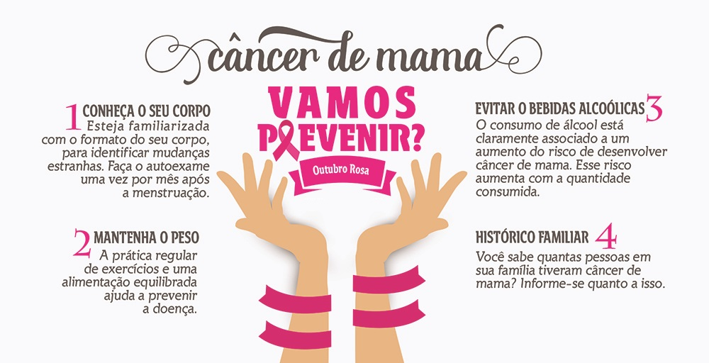
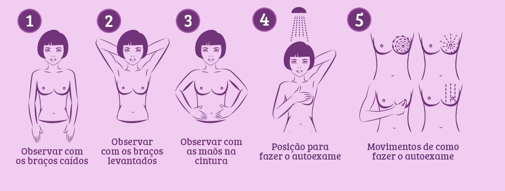

Como prevenir?

Autoexame e prevenção do câncer de mama
Manter hábitos saudáveis é a melhor forma de prevenir o câncer de mama, o que inclui uma dieta pobre em alimentos gordurosos, atividade física regular, pouca ingestão de bebidas alcoólicas e nenhum cigarro. A atividade física e o aleitamento são considerados os principais fatores de proteção contra a doença. A detecção do câncer de mama nas etapas iniciais aumenta as chances de cura. O autoexame e o exame clínico das mamas feito por um profissional treinado são os procedimentos recomendados para a detecção precoce da doença.
Autoexame de mama
O autoexame de mama não substitui o exame clínico que deve ser feito a cada dois anos a partir dos 30 ou 35 anos. Mas a mulher pode ajudar na detecção precoce do câncer de mama fazendo o toque das mamas. Mas encontrar um nódulo não quer dizer que seja um câncer. Só um médico pode fazer o diagnóstico após exames.
- O autoexame é recomendado a partir dos 20 anos de idade;
- A periodicidade deve ser mensal;
- O ideal é fazer a palpação das mamas entre o quarto e o sexto dias após o fim do fluxo menstrual;
- Mulheres que não menstruam devem fixar uma data para fazer a avaliação;
- As mulheres devem fazer a apalpação dos seios em frente ao espelho e durante o banho ou deitadas;
- Na frente do espelho, a mulher deve observar se há deformação ou alteração no formato das mamas, abaulamentos ou retrações e feridas ao redor do mamilo;
- No banho ou deitada, a mulher deve observar a presença de caroços nas mamas ou axilas e secreção nos mamilos.
